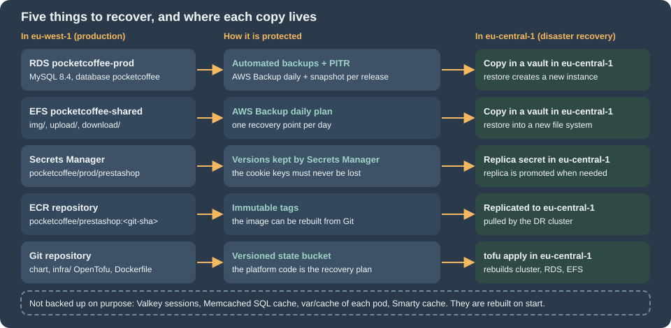

Cloud: Autoscaling, Observability, Backups and Security
|
This content was generated with the assistance of AI and should be verified against the official documentation before being relied on in production. |
This page was written against PrestaShop 9.2.0 (PHP 8.1 to 8.5, Symfony 6.4, Monolog 2.10), nginx 1.29 and PHP-FPM in the official 9.2.0-fpm image, MySQL 8.4 on Amazon RDS, Kubernetes 1.36 and 1.37 on EKS, OpenTofu 1.12 with the AWS provider 6.x, hipages/php-fpm_exporter 2.2.0 and Fluent Bit 4.2, and checked on 2026-10-29. The PrestaShop facts were read in the source of the 9.2.0 tag (config/bootstrap.php, app/config/config.yml, config_prod.yml, classes/Cookie.php, classes/PhpEncryptionEngine.php, src/Core/Crypto/Hashing.php). The PHP-FPM pool file was checked with php-fpm -t and scraped by the real exporter, the Fluent Bit configuration was run against log files, the Monolog behaviour of PS_LOG_OUTPUT was tested with Monolog 2.10.0, the key generator was run with defuse/php-encryption, and the YAML, OpenTofu (tofu validate -backend=false, tofu fmt -check) and shell listings were validated with kubeconform, OpenTofu and shellcheck. Nothing was created in an AWS account, so the AWS-side behaviour (WAF, AWS Backup, CloudWatch, Secrets Manager rotation) is as documented, not as observed.
The deployment of Pocket Coffee on EKS is described in Cloud: Reference Architecture and Cloud: EKS Infrastructure and Helm Deployment: the Deployment pocketcoffee-web runs nginx and PHP-FPM as two containers in at least two pods, MySQL 8.4 is the RDS instance pocketcoffee-prod, the shared files are on the EFS volume pocketcoffee-shared, and the secrets are in Secrets Manager. This page is about the day after: how the shop scales with traffic, how to see what it is doing, how to get it back after a loss, and how to protect and rotate what it depends on. Generic AWS and Kubernetes fundamentals are linked rather than repeated: Kubernetes autoscaling, Monitoring and observability on AWS, Amazon RDS, Secrets Manager and KMS. The same operations for WordPress, with the same tools, are in Releases, Upgrades and Autoscaling on Kubernetes; this page keeps what is specific to PrestaShop.

What there is to operate
| Concern | Where the signal or the data is | What PrestaShop adds |
|---|---|---|
Load |
CPU of the |
A request holds a database connection for its whole life, so more pods means more connections |
Errors |
The Monolog file, the |
Three different places, only one of them on stdout by default |
Database |
RDS metrics, the slow query log, Database Insights |
A shop that writes visit statistics on every page view ( |
Data to recover |
The RDS instance, the EFS volume with |
Rows and files refer to each other by id, so they have to be restored to the same moment |
Access |
The back office folder, the login pages, the Admin API, the payment callbacks |
The admin folder name is a build-time choice, and the callbacks are ordinary front controllers that must stay reachable |
Keys |
|
Changing the cookie keys signs everyone out, and one of them also decides which old passwords still work |
Autoscaling the web tier
A PrestaShop pod is a fixed pool of PHP-FPM workers. When every worker is busy, requests wait in the listen queue of the FastCGI socket and then time out at nginx, often before the CPU of the pod is saturated, because the workers wait for the database, for a payment module or for an HTTP call to a carrier. CPU is therefore a good first signal for pages that are mostly rendered from caches and a poor one for a shop whose requests wait. The signal that describes saturation directly is the number of busy workers.
Pods, workers and database connections
The number that ties scaling to the database is pods x pm.max_children. The legacy database class of PrestaShop does not use persistent connections (there is no PDO::ATTR_PERSISTENT in classes/db/), so a request opens a connection when it first needs the database and closes it when it ends; the number of open connections is the number of requests in flight, never more than pods x pm.max_children, plus the cron Job and the pocketcoffee-migrate Job. With 12 workers per pod and a ceiling of 12 pods that is 144 connections from the web tier, which has to fit under max_connections of the instance with room for the Jobs and for the monitoring user. The arithmetic and RDS Proxy are in Cloud: Managed Database (RDS and Aurora); the HPA maxReplicas below is chosen from it, not from the budget of the cluster.
The HorizontalPodAutoscaler
The HorizontalPodAutoscaler computes CPU utilisation as a percentage of the CPU request of the containers of the pod, and reports unknown if there is no request, so the php-fpm container needs one that reflects real use. The sidecars count in the average too (the exporter and the log shipper below have small requests, which lowers the average a little). The listing scales on two metrics: the CPU of the pod and the number of busy workers per pod (phpfpm_active_processes, next section). With two metrics the controller computes a desired number of replicas for each and takes the larger.
apiVersion: autoscaling/v2
kind: HorizontalPodAutoscaler
metadata:
name: pocketcoffee-web
namespace: pocketcoffee
labels:
app.kubernetes.io/name: pocketcoffee-prestashop
app.kubernetes.io/component: web
spec:
scaleTargetRef:
apiVersion: apps/v1
kind: Deployment
name: pocketcoffee-web
minReplicas: 3
maxReplicas: 12
metrics:
- type: Resource
resource:
name: cpu
target:
type: Utilization
averageUtilization: 65
- type: Pods
pods:
metric:
name: phpfpm_active_processes
target:
type: AverageValue
averageValue: "7"
behavior:
scaleUp:
stabilizationWindowSeconds: 0
policies:
- type: Percent
value: 100
periodSeconds: 60
- type: Pods
value: 4
periodSeconds: 60
selectPolicy: Max
scaleDown:
stabilizationWindowSeconds: 600
policies:
- type: Pods
value: 1
periodSeconds: 120The numbers follow from the pool of the next section: with pm.max_children = 12, a target of 7 busy workers keeps about 40 percent of the workers free for a burst while new pods start. Three is the minimum so that the loss of one availability zone leaves two pods, and a PodDisruptionBudget (maxUnavailable: 1) has room to drain nodes. Scale up fast, because a campaign e-mail brings the traffic within a minute; scale down slowly (one pod every two minutes after ten minutes of lower load), because a new pod starts with a cold OPcache and an empty var/cache, which is the slowest the shop will ever be. The cache warm-up that shortens it is in Cloud: Releases and Upgrades.
The Pods metric needs an adapter that exposes it through the custom.metrics.k8s.io API: the Kubernetes SIGs prometheus-adapter with a rule over phpfpm_active_processes, or KEDA, which replaces the HPA by a ScaledObject. The rule, the PodMonitor and the trade-off are the same as for WordPress and are in Releases, Upgrades and Autoscaling on Kubernetes. Until the adapter exists, delete the Pods entry and keep the CPU metric; an HPA that lists a metric it cannot read stops scaling with FailedGetPodsMetric.
Nodes
The HPA adds pods; it does not add nodes. Pods that do not fit stay Pending until the node layer reacts: Karpenter, or EKS Auto Mode which runs it for you, creates a node for them, and removes empty nodes later. Both are described in EKS clusters. Two consequences for this shop. First, set the CPU and memory requests of both containers honestly, because the node scheduler packs pods by requests. Second, an Auto Mode node is replaced at most every 21 days and Karpenter consolidates nodes, so pods are evicted regularly: keep the PodDisruptionBudget, a preStop pause so that nginx stops receiving traffic before the container ends, and terminationGracePeriodSeconds longer than the slowest checkout request. A pod that is killed in the middle of a payment callback is the one place where graceful termination has a cost you can measure in orders.
What scaling does not fix
-
The database. Another pod does not make a slow query faster; it makes the next one run in parallel. If
phpfpm_listen_queuegrows while CPU of the pods is low, look at the database (slow queries, below) before raisingmaxReplicas. -
The back office. A catalogue import or a stock export is one long request with a large memory use. Give the pool
request_terminate_timeoutand size the memory limit for it, or route the back office to its own small Deployment. -
The cron Job.
pocketcoffee-cronis a CronJob, not part of the HPA; if its runs overlap, setconcurrencyPolicy: Forbid.
PHP-FPM metrics
PHP-FPM publishes the state of its pool on a status page when pm.status_path is set. The page is served by FPM itself over FastCGI, not by nginx, so it is reachable only by a client that speaks FastCGI to port 9000 inside the pod, which is what the exporter does; nginx has no location that passes /status on, so it is not exposed to the internet. The official image already sends the FPM error log and the access log to stderr (docker.conf sets error_log = /proc/self/fd/2 and access.log = /proc/self/fd/2), listens on port 9000, sets catch_workers_output = yes and clear_env = no; the last one matters for the secrets below, because with the default clear_env = yes PHP code cannot read the environment variables of the container.
[www]
pm = dynamic
pm.max_children = 12
pm.start_servers = 4
pm.min_spare_servers = 2
pm.max_spare_servers = 6
pm.max_requests = 500
pm.status_path = /status
ping.path = /ping
ping.response = pong
request_terminate_timeout = 60sThe file is read after docker.conf because of its name (zz-), so it overrides the defaults of the image. It was checked with php-fpm -t in php:8.4-fpm; the pool keys are the PHP ones, not PrestaShop’s. pm.max_children = 12 assumes a memory limit of about 1 GiB for the container: measure the resident memory of a worker under your own traffic (the test shop used 10.7 MB for the home page, the back office needs far more, see Performance and Caching) and divide. pm.max_requests recycles workers, which bounds the growth of a leaky module.
The exporter is a sidecar of the pocketcoffee-web pod. The community project hipages/php-fpm_exporter (not an official PHP or PrestaShop project) turns the status page into Prometheus metrics on port 9253. Version 2.2.0 was run against a real FPM with the pool file above and exposed, among others, these series, which are the ones that matter:
| Metric | Meaning |
|---|---|
|
Workers serving a request now. The value the HPA scales on. |
|
Workers waiting for a request. |
|
Requests waiting for a free worker. Anything above zero for more than a few seconds is saturation. |
|
How many times the pool hit |
|
The highest number of busy workers since the pool started. Tells whether |
|
Requests slower than |
Check the names on the /metrics endpoint of the version you deploy before building a dashboard or an HPA on them; they are the contract between the pieces. The pod listing in the next section contains the sidecar; the alerts that earn a page are an increase of phpfpm_max_children_reached over five minutes, a phpfpm_listen_queue above zero for two minutes, and a 5xx rate at the load balancer. The PHP slow log (request_slowlog_timeout, slowlog) works through ptrace, which a hardened pod without the SYS_PTRACE capability does not have; use it in staging and rely on the database slow log and an APM agent in production.
Logs
PrestaShop writes in three places, and the first thing to settle is which of them is on stdout, because that is the only one Kubernetes and CloudWatch collect without help.
| Source | Where it goes | In a pod |
|---|---|---|
The Symfony logger (Monolog) used by the back office, the console and the Symfony part of the front office |
|
On the container filesystem, lost with the pod, not on stdout |
The legacy logger |
The |
In the shared database, and growing; purge it as in Performance and Caching |
PHP errors and the FPM access log |
stderr of PHP-FPM |
On the container output, collected |
nginx access and error log |
|
On the container output, collected |
In app/config/config.yml of 9.2.0 the main Monolog handler is rotating_file with path: '%env(PS_LOG_OUTPUT)%' and max_files: '%env(int:PS_LOG_MAX_FILES)%', and the defaults are %kernel.logs_dir%/%kernel.environment%.log and 30. config_prod.yml wraps it in a fingers_crossed handler with action_level: error, so in production the log stays quiet until a request produces an error and then contains every record of that request, down to debug level. That is the behaviour you want from a log you read after an incident, and it keeps the volume small.
The obvious way to get the log onto stdout is to set PS_LOG_OUTPUT=php://stderr. It does not work with the shipped handler. The rotating_file handler of Monolog builds a dated file name from the path (name-YYYY-MM-DD.ext) and opens that; with php://stderr it creates a directory php: and a file stderr-2026-10-29 in the working directory and writes there. This was reproduced with Monolog 2.10.0, the version locked by PrestaShop 9.2.0; a plain StreamHandler on php://stderr does work, but PrestaShop does not use one. There are two honest options:
-
Keep the file and ship it. Point
PS_LOG_OUTPUTat a directory that is anemptyDirshared with a log-shipper sidecar, and let the sidecar read the files and write them to its own stdout. Nothing in the core is changed, upgrades do not touch it, and this is what the listing below does. -
Change the handler at build time, for example with a
sedin the Dockerfile that replacestype: rotating_filebytype: streaminapp/config/config_prod.yml. This puts the log on the container output with no sidecar, but it edits a core file that every core upgrade overwrites; it was not tested here, and the monolog-bundle options of thestreamhandler should be read before relying on it.
The listing shows the pod as the chart renders it, with the four containers of the web pod (nginx, PHP-FPM, the exporter and the log shipper) and the emptyDir volumes. The image tag <git-sha> and the secret names are those of the chart; the Helm template that produces this is in Cloud: EKS Infrastructure and Helm Deployment.
apiVersion: apps/v1
kind: Deployment
metadata:
name: pocketcoffee-web
namespace: pocketcoffee
labels:
app.kubernetes.io/name: pocketcoffee-prestashop
app.kubernetes.io/component: web
spec:
replicas: 3
selector:
matchLabels:
app.kubernetes.io/name: pocketcoffee-prestashop
app.kubernetes.io/component: web
template:
metadata:
labels:
app.kubernetes.io/name: pocketcoffee-prestashop
app.kubernetes.io/component: web
spec:
terminationGracePeriodSeconds: 60
securityContext:
fsGroup: 33
topologySpreadConstraints:
- maxSkew: 1
topologyKey: topology.kubernetes.io/zone
whenUnsatisfiable: ScheduleAnyway
labelSelector:
matchLabels:
app.kubernetes.io/name: pocketcoffee-prestashop
app.kubernetes.io/component: web
containers:
- name: php-fpm
image: "123456789012.dkr.ecr.eu-west-1.amazonaws.com/pocketcoffee/prestashop:<git-sha>"
env:
- name: PS_LOG_OUTPUT
value: /var/log/prestashop/prod.log
- name: PS_LOG_MAX_FILES
value: "2"
ports:
- name: fastcgi
containerPort: 9000
resources:
requests: {cpu: 500m, memory: 768Mi}
limits: {memory: 1Gi}
volumeMounts:
- name: ps-logs
mountPath: /var/log/prestashop
- name: nginx
image: nginx:1.29
ports:
- name: http
containerPort: 8080
resources:
requests: {cpu: 50m, memory: 64Mi}
limits: {memory: 128Mi}
lifecycle:
preStop:
exec:
command: ["sh", "-c", "sleep 15 && nginx -s quit"]
- name: php-fpm-exporter
image: hipages/php-fpm_exporter:2.2.0
args: ["server", "--phpfpm.scrape-uri=tcp://127.0.0.1:9000/status"]
ports:
- name: fpm-metrics
containerPort: 9253
resources:
requests: {cpu: 10m, memory: 32Mi}
limits: {memory: 64Mi}
- name: log-shipper
image: fluent/fluent-bit:4.2
resources:
requests: {cpu: 20m, memory: 32Mi}
limits: {memory: 64Mi}
volumeMounts:
- name: ps-logs
mountPath: /var/log/prestashop
readOnly: true
- name: fluent-bit-config
mountPath: /fluent-bit/etc/fluent-bit.conf
subPath: fluent-bit.conf
volumes:
- name: ps-logs
emptyDir:
sizeLimit: 256Mi
- name: fluent-bit-config
configMap:
name: pocketcoffee-fluent-bitfsGroup: 33 makes the emptyDir writable by www-data, the user of the PHP workers. PS_LOG_MAX_FILES=2 keeps two daily files on the volume, which is plenty because the sidecar has already read them, and the sizeLimit evicts a pod whose log explodes instead of filling the node. The preStop pause gives the load balancer time to take the pod out of rotation before nginx stops accepting connections. The ps-logs volume is separate from the writable paths that must be shared between pods (img/, upload/, download/ on EFS, see Cloud: Shared Media and Writable Paths); a log is per pod and is never shared. The excerpt was validated with kubeconform -strict against the Kubernetes 1.36 schemas; the real chart also mounts the shared volume, the probes and the secrets.
[SERVICE]
Flush 1
Log_Level warn
[INPUT]
Name tail
Path /var/log/prestashop/*.log
Tag prestashop
Refresh_Interval 10
Read_from_Head true
Skip_Long_Lines on
[OUTPUT]
Name stdout
Match prestashop
Format json_linesThe configuration was run against a directory of Monolog files: it printed each line as a JSON object with a log field, and when a second file appeared (the next day’s prod-YYYY-MM-DD.log) it was picked up within Refresh_Interval seconds without a restart, which a plain tail -F on a glob does not do.
From the container output to CloudWatch Logs
Once everything is on the container output, collection is the same as for any pod. The Amazon CloudWatch Observability add-on of EKS installs the CloudWatch agent and Fluent Bit and sends the container output of every pod to log groups under /aws/containerinsights/pocketcoffee-prod/ (the application logs in the group application). Whether the add-on is supported on an EKS Auto Mode cluster in your configuration, and the IAM role it needs (the managed policy CloudWatchAgentServerPolicy, through EKS Pod Identity or IAM roles for service accounts), are in the AWS documentation; verify both before choosing it over a log collector you run yourself.
#!/usr/bin/env bash
set -euo pipefail
CLUSTER=pocketcoffee-prod
REGION=eu-west-1
# The role must carry CloudWatchAgentServerPolicy; the ARN comes from the OpenTofu stack.
aws eks create-addon \
--region "$REGION" \
--cluster-name "$CLUSTER" \
--addon-name amazon-cloudwatch-observability \
--pod-identity-associations "serviceAccount=cloudwatch-agent,roleArn=arn:aws:iam::123456789012:role/pocketcoffee-prod-cloudwatch-agent"
# Log groups are created without an expiry: set one explicitly.
aws logs put-retention-policy \
--region "$REGION" \
--log-group-name "/aws/containerinsights/${CLUSTER}/application" \
--retention-in-days 30Source: Amazon CloudWatch User Guide: Quick Start with the Amazon CloudWatch Observability EKS add-on
A Logs Insights query over the group finds the requests that failed. The field names of the Kubernetes metadata depend on the collector version, so look at one event before saving the query:
fields @timestamp, kubernetes.pod_name, log
| filter log like /app\.(ERROR|CRITICAL)/
| sort @timestamp desc
| limit 50The Monolog line is plain text ([2026-10-29T17:52:51.316648+00:00] app.ERROR: message [] []), not JSON, which is why the query matches on text. Alerting on it is a metric filter on the log group with an alarm; the pattern is in Monitoring and observability on AWS. If you prefer a collector that you run, a Fluent Bit sidecar with the cloudwatch_logs output does the same without the add-on.
Slow queries
The database is where a PrestaShop shop usually spends its time, and RDS keeps a log of the statements that took too long. It is off by default: turn it on in the parameter group and export it to CloudWatch Logs, so that it can be searched from the same place as the application logs. The listing is the part of the OpenTofu stack that concerns logging and the retention of the group that RDS creates; the instance itself is in Cloud: Managed Database (RDS and Aurora).
terraform {
required_version = ">= 1.8"
required_providers {
aws = {
source = "hashicorp/aws"
version = "~> 6.0"
}
}
}
provider "aws" {
region = "eu-west-1"
}
resource "aws_db_parameter_group" "prestashop" {
name = "pocketcoffee-prod-mysql84"
family = "mysql8.4"
parameter {
name = "slow_query_log"
value = "1"
}
parameter {
name = "long_query_time"
value = "1"
}
parameter {
name = "log_output"
value = "FILE"
}
}
# On the aws_db_instance "pocketcoffee-prod" of the database page:
# parameter_group_name = aws_db_parameter_group.prestashop.name
# enabled_cloudwatch_logs_exports = ["error", "slowquery"]
resource "aws_cloudwatch_log_group" "slowquery" {
name = "/aws/rds/instance/pocketcoffee-prod/slowquery"
retention_in_days = 30
}The registry page documents the AWS provider that OpenTofu uses unchanged. The log group is created by RDS the first time a log is exported; declaring it first, with the exact name, gives it a retention instead of keeping everything for ever. On Aurora MySQL the same parameters live in the cluster parameter group. A long_query_time of 1 second is a starting point: lower it to 0.5 for a week during a performance investigation, then back, because the log itself costs I/O and storage.
What to expect in the log is a function of the shop. The tables that grow with traffic and with the age of the shop (ps_connections, ps_guest, ps_log, ps_cart and its products) are the usual suspects, and the purge that keeps them small is in Performance and Caching; the SQL cache (CacheMemcached on ElastiCache for Memcached, see Cloud: Cache, Sessions and the Back Office in a Cluster) hides repeated reads from the log, so a query that is slow and cached shows up rarely. A first aggregate over the slow log:
parse @message /Query_time: (?<qt>[0-9.]+)/
| filter ispresent(qt)
| stats count(*) as slow, max(qt) as worst, avg(qt) as mean by bin(1h)
| sort @timestamp descStatement-level analysis is the job of CloudWatch Database Insights. It replaced the Performance Insights console experience, shows the load of the instance by wait event, SQL statement and user (so the ps_app application, the ps_migrate Job and the back office show up as separate sources only if they use separate users, which is one reason for having them), and in its Advanced mode also execution plans and on-demand analysis. The modes, the retention and their cost drivers are in Amazon RDS; choose the mode per instance, and check the current wording on the AWS page before relying on the old Performance Insights flags in automation.
Backups and disaster recovery
A single-server PrestaShop is backed up by a dump of the database and an archive of the shop directory. On EKS the same information is in separate stores with separate recovery points, and the question to answer is whether they can be brought back to the same moment.
| Component | Backup | Recovery |
|---|---|---|
RDS |
Automated backups with point-in-time recovery (retention set on the instance), a manual snapshot before each release, an AWS Backup copy to a second region |
|
EFS |
AWS Backup, with a cross-region copy |
A restore job creates a new file system; the PersistentVolume is repointed to it |
Secret |
Versions in Secrets Manager, a replica secret in the DR region |
Promote the replica. Losing the cookie keys signs everyone out and breaks some old passwords, see the last section |
ECR |
Replication to the DR region; the image is rebuildable from Git |
Pull in the DR cluster |
Chart, |
Git and a versioned state bucket |
|
Valkey, Memcached, |
None, on purpose |
Start empty; expect a slow first minutes |
The OpenTofu below is a daily AWS Backup plan that protects the RDS instance and the EFS file system with one plan and copies both to a vault in eu-central-1. The instance keeps its own automated backups and point-in-time recovery as well (backup_retention_period on the aws_db_instance, 14 days is a common choice): point-in-time recovery has a granularity of minutes, the AWS Backup plan gives the long retention and the second region.
terraform {
required_version = ">= 1.8"
required_providers {
aws = {
source = "hashicorp/aws"
version = "~> 6.0"
}
}
}
provider "aws" {
region = "eu-west-1"
}
provider "aws" {
alias = "dr"
region = "eu-central-1"
}
variable "protected_resource_arns" {
type = list(string)
description = "ARNs of the RDS instance pocketcoffee-prod and of the EFS file system pocketcoffee-shared"
}
resource "aws_backup_vault" "primary" {
name = "pocketcoffee-primary"
}
resource "aws_backup_vault" "dr" {
provider = aws.dr
name = "pocketcoffee-dr"
}
resource "aws_iam_role" "backup" {
name = "pocketcoffee-backup"
assume_role_policy = jsonencode({
Version = "2012-10-17"
Statement = [{
Effect = "Allow"
Action = "sts:AssumeRole"
Principal = { Service = "backup.amazonaws.com" }
}]
})
}
resource "aws_iam_role_policy_attachment" "backup" {
role = aws_iam_role.backup.name
policy_arn = "arn:aws:iam::aws:policy/service-role/AWSBackupServiceRolePolicyForBackup"
}
resource "aws_iam_role_policy_attachment" "restore" {
role = aws_iam_role.backup.name
policy_arn = "arn:aws:iam::aws:policy/service-role/AWSBackupServiceRolePolicyForRestores"
}
resource "aws_backup_plan" "prestashop" {
name = "pocketcoffee-daily"
rule {
rule_name = "daily-with-dr-copy"
target_vault_name = aws_backup_vault.primary.name
schedule = "cron(0 2 * * ? *)"
lifecycle {
delete_after = 35
}
copy_action {
destination_vault_arn = aws_backup_vault.dr.arn
lifecycle {
delete_after = 35
}
}
}
}
resource "aws_backup_selection" "prestashop" {
name = "pocketcoffee-data"
iam_role_arn = aws_iam_role.backup.arn
plan_id = aws_backup_plan.prestashop.id
resources = var.protected_resource_arns
}Vaults can be encrypted with a customer-managed KMS key per region (kms_key_arn), see Secrets Manager and KMS. The AWSBackupServiceRolePolicyForRestores attachment is what lets the same role run the restore jobs below.
Before a release and the restore drill
A snapshot before every release is the rollback of the database part of a release; it takes the place of the dump that a single server would make. The restore drill is the part that proves the rest, and it belongs in the calendar (quarterly is a reasonable cadence), not in the incident.
#!/usr/bin/env bash
set -euo pipefail
REGION=eu-west-1
SNAPSHOT="pocketcoffee-prod-pre-$(date -u +%Y%m%d%H%M)"
# 1. Before the release: a manual snapshot that no retention rule deletes.
aws rds create-db-snapshot \
--region "$REGION" \
--db-instance-identifier pocketcoffee-prod \
--db-snapshot-identifier "$SNAPSHOT"
aws rds wait db-snapshot-available \
--region "$REGION" \
--db-snapshot-identifier "$SNAPSHOT"
# 2. The drill: restore the last restorable moment, or a chosen time, into a NEW instance.
aws rds restore-db-instance-to-point-in-time \
--region "$REGION" \
--source-db-instance-identifier pocketcoffee-prod \
--target-db-instance-identifier pocketcoffee-restore-drill \
--use-latest-restorable-time \
--db-subnet-group-name pocketcoffee-db \
--no-publicly-accessible
aws rds wait db-instance-available \
--region "$REGION" \
--db-instance-identifier pocketcoffee-restore-drill
aws rds describe-db-instances \
--region "$REGION" \
--db-instance-identifier pocketcoffee-restore-drill \
--query 'DBInstances[0].Endpoint.Address' \
--output textThe restored instance has the data and the engine settings, and not the security groups, the parameter group or the users' network paths unless you pass them; give it the same subnet group, security group and parameter group as production, and attach the same monitoring. Point a staging release at it (database.host of the chart) and check the shop: the home page, a product, a checkout in test mode, a back office login, and the numbers of ps_orders and ps_customer against what you expect. A drill that ends at "the instance is available" has not shown that the shop works.
The file system is restored from a recovery point of the vault. The metadata of the restore is read from the recovery point and changed to ask for a new file system; the file system id of the production volume stays untouched:
#!/usr/bin/env bash
set -euo pipefail
REGION=eu-west-1
VAULT=pocketcoffee-primary
RESOURCE_ARN="$1" # the ARN of the EFS file system pocketcoffee-shared
ROLE_ARN=arn:aws:iam::123456789012:role/pocketcoffee-backup
RECOVERY_POINT_ARN=$(aws backup list-recovery-points-by-backup-vault \
--region "$REGION" \
--backup-vault-name "$VAULT" \
--by-resource-arn "$RESOURCE_ARN" \
--query 'sort_by(RecoveryPoints, &CreationDate)[-1].RecoveryPointArn' \
--output text)
# The restore metadata of an EFS recovery point has to be changed to ask for a new file system.
METADATA=$(aws backup get-recovery-point-restore-metadata \
--region "$REGION" \
--backup-vault-name "$VAULT" \
--recovery-point-arn "$RECOVERY_POINT_ARN" \
--query 'RestoreMetadata' \
--output json | jq -c '. + {newFileSystem: "true", CreationToken: ("pocketcoffee-drill-" + (now | floor | tostring))}')
aws backup start-restore-job \
--region "$REGION" \
--recovery-point-arn "$RECOVERY_POINT_ARN" \
--iam-role-arn "$ROLE_ARN" \
--metadata "$METADATA" \
--resource-type EFSThe scripts were checked with shellcheck; the jq expression was run on a sample metadata object, and the exact keys of the restore metadata for your recovery point must be read from the output of get-recovery-point-restore-metadata as above, not typed. When the job finishes, create a mount target and an access point (uid and gid 33) on the new file system, point a drill PersistentVolume at it, and check that img/p/ and upload/ have the files you expect.
The two stores must agree
The database stores the ids of products, images and attachments, and the file system stores the files under paths made from them (img/p/1/2/3/123.jpg), so a database from Monday with the images of Wednesday is not a disaster, but a database of Wednesday with the images of Monday shows broken product pictures for everything uploaded in between. The rules that follow:
-
Restore both to the same moment when you can. A daily plan at 02:00 gives a database and a file system within minutes of each other.
-
If the files are older than the database, the thumbnails are regenerated from the originals with
bin/console prestashop:thumbnails:regenerate, but an original that was not in the backup is gone; the product page has to be edited again. -
If the database is older than the files, the extra files are unreferenced and harmless.
-
A point-in-time restore loses the orders placed between the chosen time and the failure. The payment provider still holds the payments: reconcile its list of transactions against
ps_ordersbefore reopening, and decide for each missing order whether to recreate it or to refund. This is the largest cost of a database recovery for a shop, and the reason to keep the RPO of the database in minutes.
Disaster recovery in a second region
The RPO and the RTO of a regional loss are different from the single-instance backup. The database is as old as the last copy in the vault of eu-central-1 (daily with this plan, so up to a day; shorten the schedule or add a cross-region read replica if that is too long), the files are as old as their copy, the secret and the image are replicated, and the code is in Git. The RTO is dominated by the steps that are not automatic: applying the OpenTofu stack in the DR region, restoring the database and the file system, and changing the DNS record of www.pocketcoffee.example (a health-checked failover record in Route 53 does the last step when the primary is down). Write the order down, rehearse it once a year in a scratch account or region, and keep the runbook outside the platform that it recovers.
AWS WAF in front of the shop
A web ACL in front of the load balancer (or of CloudFront) removes a class of traffic before PHP sees it: known bad inputs, SQL injection patterns, bots with a bad reputation, and the brute force against the login forms. It does not replace a patched PrestaShop and modules, the secure coding rules, or the hardening of Security; it buys time between an advisory and the rollout of the fix. The pieces that are specific to PrestaShop are three paths:
| Path | Treatment |
|---|---|
|
Allowed only from the office and VPN addresses, and a rate limit on the |
|
A rate limit per client address on |
|
Must be reachable from the payment provider. Excluded from the managed rule groups, whose body inspection rejects some webhook payloads, and protected instead by the signature that the module verifies, a generous rate limit, and the provider’s published source addresses when it has them. |
terraform {
required_version = ">= 1.8"
required_providers {
aws = {
source = "hashicorp/aws"
version = "~> 6.0"
}
}
}
provider "aws" {
region = "eu-west-1"
}
variable "admin_cidrs" {
type = list(string)
description = "Addresses that may reach the back office"
default = ["203.0.113.0/24"]
}
variable "enforce_managed_rules" {
type = bool
description = "false runs the managed groups in count mode, to read the sampled requests before blocking"
default = false
}
locals {
admin_prefix = "/admin-pocketcoffee/"
webhook_prefix = "/module/pocketcoffee_pay/"
managed_groups = {
"AWSManagedRulesCommonRuleSet" = 10
"AWSManagedRulesKnownBadInputsRuleSet" = 20
"AWSManagedRulesSQLiRuleSet" = 30
"AWSManagedRulesPHPRuleSet" = 40
"AWSManagedRulesAmazonIpReputationList" = 50
}
}
resource "aws_wafv2_ip_set" "admin" {
name = "pocketcoffee-admin-allowed"
scope = "REGIONAL"
ip_address_version = "IPV4"
addresses = var.admin_cidrs
}
resource "aws_wafv2_web_acl" "shop" {
name = "pocketcoffee-prod-alb"
scope = "REGIONAL"
default_action {
allow {}
}
# 1. Back office only from known addresses.
rule {
name = "admin-allow-list"
priority = 1
action {
block {}
}
statement {
and_statement {
statement {
byte_match_statement {
search_string = local.admin_prefix
positional_constraint = "STARTS_WITH"
field_to_match {
uri_path {}
}
text_transformation {
priority = 0
type = "LOWERCASE"
}
}
}
statement {
not_statement {
statement {
ip_set_reference_statement {
arn = aws_wafv2_ip_set.admin.arn
}
}
}
}
}
}
visibility_config {
cloudwatch_metrics_enabled = true
metric_name = "admin-allow-list"
sampled_requests_enabled = true
}
}
# 2. Brute force: at most 100 login POSTs per address in five minutes.
rule {
name = "login-rate"
priority = 2
action {
block {}
}
statement {
rate_based_statement {
limit = 100
aggregate_key_type = "IP"
evaluation_window_sec = 300
scope_down_statement {
and_statement {
statement {
byte_match_statement {
search_string = "POST"
positional_constraint = "EXACTLY"
field_to_match {
method {}
}
text_transformation {
priority = 0
type = "NONE"
}
}
}
statement {
or_statement {
statement {
byte_match_statement {
search_string = local.admin_prefix
positional_constraint = "STARTS_WITH"
field_to_match {
uri_path {}
}
text_transformation {
priority = 0
type = "LOWERCASE"
}
}
}
statement {
byte_match_statement {
search_string = "/login"
positional_constraint = "EXACTLY"
field_to_match {
uri_path {}
}
text_transformation {
priority = 0
type = "LOWERCASE"
}
}
}
}
}
}
}
}
}
visibility_config {
cloudwatch_metrics_enabled = true
metric_name = "login-rate"
sampled_requests_enabled = true
}
}
# 3. The payment callbacks: counted, not blocked, until the real rate is known.
rule {
name = "webhook-rate"
priority = 3
action {
count {}
}
statement {
rate_based_statement {
limit = 3000
aggregate_key_type = "IP"
evaluation_window_sec = 300
scope_down_statement {
byte_match_statement {
search_string = local.webhook_prefix
positional_constraint = "STARTS_WITH"
field_to_match {
uri_path {}
}
text_transformation {
priority = 0
type = "LOWERCASE"
}
}
}
}
}
visibility_config {
cloudwatch_metrics_enabled = true
metric_name = "webhook-rate"
sampled_requests_enabled = true
}
}
# 4. Managed rule groups, everywhere except on the payment callbacks.
dynamic "rule" {
for_each = local.managed_groups
content {
name = rule.key
priority = rule.value
override_action {
dynamic "none" {
for_each = var.enforce_managed_rules ? [1] : []
content {}
}
dynamic "count" {
for_each = var.enforce_managed_rules ? [] : [1]
content {}
}
}
statement {
managed_rule_group_statement {
name = rule.key
vendor_name = "AWS"
# Back-office saves post HTML and large bodies: these two rules are the usual false positives.
dynamic "rule_action_override" {
for_each = rule.key == "AWSManagedRulesCommonRuleSet" ? ["SizeRestrictions_BODY", "CrossSiteScripting_BODY"] : []
content {
name = rule_action_override.value
action_to_use {
count {}
}
}
}
scope_down_statement {
not_statement {
statement {
byte_match_statement {
search_string = local.webhook_prefix
positional_constraint = "STARTS_WITH"
field_to_match {
uri_path {}
}
text_transformation {
priority = 0
type = "LOWERCASE"
}
}
}
}
}
}
}
visibility_config {
cloudwatch_metrics_enabled = true
metric_name = rule.key
sampled_requests_enabled = true
}
}
}
visibility_config {
cloudwatch_metrics_enabled = true
metric_name = "pocketcoffee-prod-alb"
sampled_requests_enabled = true
}
}
output "web_acl_arn" {
value = aws_wafv2_web_acl.shop.arn
}The ACL is associated with the load balancer by the annotation alb.ingress.kubernetes.io/wafv2-acl-arn of the Ingress or, with a CloudFront distribution in front of the shop, by a web ACL of scope CLOUDFRONT created in us-east-1; see Load balancers and gateways on AWS and CloudFront. Behind CloudFront the client address that the rate rules see is the one of the CloudFront edge unless the rule aggregates on the forwarded address (aggregate_key_type = "FORWARDED_IP" with a forwarded_ip_config), and PrestaShop itself needs PS_TRUSTED_PROXIES (an environment variable that app/config/config.yml reads) to trust the proxy that sets X-Forwarded-For and X-Forwarded-Proto.
Operate it in this order. Deploy with enforce_managed_rules = false, so that the five groups only count; read the sampled requests for a week of normal traffic, including a back office session, a checkout, a catalogue import and several payment callbacks; add an override or a scope-down for each rule that counted a legitimate request; then set it to true. Two of the rules of the Common group are already overridden to count in the listing, because the back office posts HTML (CMS pages, product descriptions) and large bodies, and that is where a body-inspection rule fires on a legitimate save; the body inspection is still on at the URL, query string and cookie level, and the back office is behind the address list. The rule names and the labels of each group are in the AWS managed rule groups documentation; read the current list rather than trusting this page for names that AWS adds and renames. The rate limits are a starting point to tune against the real traffic: a shop behind a corporate proxy or a mobile carrier can put hundreds of customers on one address.
Rotating secrets
Not every secret rotates in the same way, and in PrestaShop the difference is large. The table lists what the shop reads, from parameters.php, and what happens when it changes.
| Secret | Where | What a change does |
|---|---|---|
Database passwords ( |
Secrets Manager, read as |
Nothing, if the new password is valid in the database before the pods read it. Pods that keep the old one fail to connect, so rotate with two users that alternate, or restart the pods in the same step. |
|
|
The Symfony secret from which tokens and signatures are derived. Forms of the back office that were opened before the change fail their CSRF check and have to be reloaded. Nothing else is stored under it. |
|
|
The salt of the checksum inside the cookie, also used by |
|
|
The key that encrypts the cookie. A change signs everyone out. See the last section. |
|
|
The static salt of the legacy password hash, of |
How the pods get a new value
The values reach the pod as environment variables built from a Kubernetes Secret that the External Secrets Operator keeps in step with Secrets Manager. A change in Secrets Manager updates the Secret within refreshInterval, but a running container never sees a changed environment variable, and there is a second reason that a restart is needed in PrestaShop: config/bootstrap.php evaluates app/config/parameters.php, writes the resulting array with var_export to var/cache/<environment>/appParameters.php, and reuses that file for as long as it is newer than parameters.php; the Symfony container compiled in var/cache also contains the parameters. Values read with getenv() in parameters.php are therefore frozen into the cache at the first request of the pod. Two rules follow: the rotated value takes effect when a pod starts with an empty var/cache, which is why the cache directory is a per-pod emptyDir (never a cache baked into the image with placeholder values, or the placeholders win because the cache file is newer than parameters.php), and every rotation ends with a rolling restart of the Deployment.
apiVersion: external-secrets.io/v1
kind: ExternalSecret
metadata:
name: pocketcoffee-secrets
namespace: pocketcoffee
spec:
refreshInterval: 1h
secretStoreRef:
kind: ClusterSecretStore
name: aws-secretsmanager
target:
name: pocketcoffee-secrets
creationPolicy: Owner
data:
- secretKey: DB_PASSWORD_APP
remoteRef:
key: pocketcoffee/prod/prestashop-db-app
property: password
- secretKey: DB_PASSWORD_MIGRATE
remoteRef:
key: pocketcoffee/prod/prestashop-db-migrate
property: password
dataFrom:
- extract:
key: pocketcoffee/prod/prestashop
- extract:
key: pocketcoffee/prod/valkeyThe names of the environment variables, of the Secret pocketcoffee-secrets and of the secret keys are those of the chart on the Helm page, which renders this object. The database credentials are in their own secrets (prestashop-db-app and prestashop-db-migrate), and not in pocketcoffee/prod/prestashop next to the cookie keys, and the Secret key DB_PASSWORD_APP reaches the pods as DB_PASSWD: the rotation functions of Secrets Manager expect a secret with the structure of a database credential (username, password, engine, host, dbname and port, and for the alternating-users strategy a masterarn that points to the secret of an administrative user), and a secret that also holds cookie keys should not be handed to a function that rewrites it. The cookie keys and secret have no rotation function; they are changed on purpose and by hand.
terraform {
required_version = ">= 1.8"
required_providers {
aws = {
source = "hashicorp/aws"
version = "~> 6.0"
}
}
}
provider "aws" {
region = "eu-west-1"
}
variable "rotation_lambda_arn" {
type = string
description = "ARN of the Secrets Manager rotation function for MySQL with the alternating-users strategy"
}
resource "aws_secretsmanager_secret" "db_app" {
name = "pocketcoffee/prod/prestashop-db-app"
}
resource "aws_secretsmanager_secret_rotation" "db_app" {
secret_id = aws_secretsmanager_secret.db_app.id
rotation_lambda_arn = var.rotation_lambda_arn
rotation_rules {
automatically_after_days = 30
}
}The alternating users strategy keeps two database users (ps_app and ps_app_clone) and rotates the password of the one that is not in use, then switches the secret to it; the old password stays valid for one more rotation period. That window is what lets the rolling restart of the pods happen after the secret changed, without a moment in which the pods have a password that the database has already dropped. With the single-user strategy the password changes in the database and in the secret at the same instant, and every pod that has not restarted fails until it does. The function itself is created from the AWS templates for RDS MySQL (it runs in the VPC and needs a network path to Secrets Manager and to the database); the page does not reproduce it. The secret of the user that creates the schema and runs the upgrades (ps_migrate) is read by the Jobs only, so a rotation of it does not touch the web pods. The chart of the Helm page takes DB_USER from the value database.appUser and only the password from the secret, which fits the single-user strategy; with alternating users the user name changes with every rotation, so add - secretKey: DB_USER_APP with property: username to the data list of the ExternalSecret above and read DB_USER from that key in the helper pc.dbEnv. The listing of rotation.tf shows only the rotation of the secret that the OpenTofu configuration of the Helm page already declares as aws_secretsmanager_secret.db_app; in that configuration add the aws_secretsmanager_secret_rotation resource and not a second secret.
#!/usr/bin/env bash
set -euo pipefail
REGION=eu-west-1
# 1. Rotate now (outside the schedule) and wait for the new version to become current.
aws secretsmanager rotate-secret \
--region "$REGION" \
--secret-id pocketcoffee/prod/prestashop-db-app
# 2. Force the External Secrets Operator to read it now instead of waiting for refreshInterval.
kubectl --namespace pocketcoffee annotate externalsecret pocketcoffee-secrets \
"force-sync=$(date +%s)" --overwrite
# 3. Restart the pods: each new pod starts with an empty var/cache and reads the new environment.
kubectl --namespace pocketcoffee rollout restart deployment/pocketcoffee-web
kubectl --namespace pocketcoffee rollout status deployment/pocketcoffee-web --timeout=10m
# 4. Check that the shop answers and that the pods connect.
kubectl --namespace pocketcoffee get pods -l app.kubernetes.io/component=web
curl --fail --silent --show-error --output /dev/null https://www.pocketcoffee.example/Source: External Secrets Operator: FAQ
The annotation trick is the one of the Operator’s documentation for forcing a reconciliation. A controller such as Reloader (stakater/Reloader) can restart the Deployment automatically when the Secret changes; it replaces step 3 and nothing else, and it should be tested on staging, because an unexpected restart in the middle of a campaign is also a rotation.
The cookie keys
Three values in parameters.php look alike and do different things. They are read in config/bootstrap.php and defined as constants, and the table is what the 9.2.0 source does with each.
| Parameter | What the code does with it |
|---|---|
|
The key of the encryption of the front-office and back-office cookie: |
|
The salt of the checksum that is stored inside the cookie (a SHA-256 over the salt and the content, in |
|
The static salt of the legacy password hashing ( |
What goes wrong, and what does not
A pod without the keys invents its own. In config/bootstrap.php, if cookie_key, cookie_iv or new_cookie_key is missing from the parameters, the constant is defined anyway "to prevent failure in the composer post-install script", from Tools::passwdGen or PhpEncryption::createNewRandomKey(), at every start of PHP. In a deployment where the environment variable is empty or misspelled, nothing fails: the shop answers, but every request has a different key, nobody can stay logged in, and the cart seems to empty itself. All pods must have the same three values, and an empty one must fail the deployment, not start the shop. The entrypoint of the container should therefore refuse to start when one of the three values is empty.
A cookie that cannot be decrypted is a logout, not an error. PhpEncryptionEngine::decrypt returns false for a wrong key, Cookie::update() then finds no checksum and calls logout(), which deletes the session record and empties the cookie. Visitors see no error page; customers are logged out, a guest loses the link to the cart (the cart row stays in the database, a logged-in customer finds it again), and employees have to sign in again. The behaviour was checked in the source, and the key behaviour with defuse/php-encryption (a different key raises WrongKeyOrModifiedCiphertextException, which PrestaShop turns into false).
There is no old-key fallback. Nothing in 9.2.0 accepts two cookie keys at once, so a rotation is a cut. During a rolling restart, a visitor can hit an old pod and a new pod in turn, and is logged out each time the pod changes; the shorter the rollout, the shorter that period. Rotate in a quiet hour, announce it for the back office (employees lose their unsaved forms), and use a rollout with a high maxUnavailable, or accept a short maintenance page (see Cloud: Releases and Upgrades).
cookie_key is the dangerous one. Passwords are hashed with bcrypt first; Customer::getByEmail and Employee::getByEmail re-hash a password to bcrypt at the first successful login of an account whose hash is still the old md5 form (the isFirstHash check in classes/Customer.php and classes/Employee.php). A bcrypt hash does not depend on the static salt. An account that has not logged in since it was created by an old version still has the md5 hash, which is verified with _COOKIE_KEY_: after a change of cookie_key it cannot log in until the password is reset. The recovery links in e-mails already sent stop working as well. For a shop that began on PrestaShop 1.6 or 1.7 there can be many such accounts. So: never change cookie_key as routine; change it only if it was disclosed, accept the resets, and expect support tickets.
The keys are not rotated by a schedule. There is no reason to rotate new_cookie_key and cookie_iv every month; the lifetime of the cookie is a setting of the shop (PS_COOKIE_LIFETIME_FO and PS_COOKIE_LIFETIME_BO, 480 hours by default in the install data) and the cookie is worthless without the key. Rotate on a suspicion of exposure (a leaked secret, a departed administrator with access to Secrets Manager) and as part of the incident response of Security.
Generating and changing them
cookie_key and cookie_iv are random strings (the installer of PrestaShop makes them with Tools::passwdGen, 64 and 32 characters of letters and digits). new_cookie_key has to be a valid Defuse key, which the installer makes with PhpEncryption::createNewRandomKey(), that is Key::createNewRandomKey()->saveToAsciiSafeString() of the defuse/php-encryption library that ships in the vendor/ directory of the shop. The script generates a fresh new_cookie_key and cookie_iv from inside a running pod (so that the library and PHP of the production image are used), writes them to a new version of the secret and starts the rollout of the previous section. It leaves cookie_key alone. The values are never printed.
#!/usr/bin/env bash
set -euo pipefail
REGION=eu-west-1
NAMESPACE=pocketcoffee
SECRET_ID=pocketcoffee/prod/prestashop
POD=$(kubectl --namespace "$NAMESPACE" get pods -l app.kubernetes.io/component=web \
-o jsonpath='{.items[0].metadata.name}')
# A valid Defuse key, made by the library of the shop itself.
NEW_KEY=$(kubectl --namespace "$NAMESPACE" exec "$POD" -c php-fpm -- php -r \
'require "/var/www/html/vendor/autoload.php"; echo Defuse\Crypto\Key::createNewRandomKey()->saveToAsciiSafeString();')
NEW_IV=$(openssl rand -hex 16)
# Keep every other key of the secret, replace two.
UPDATED=$(aws secretsmanager get-secret-value \
--region "$REGION" \
--secret-id "$SECRET_ID" \
--query SecretString \
--output text | jq -c --arg key "$NEW_KEY" --arg iv "$NEW_IV" \
'. + {PS_NEW_COOKIE_KEY: $key, PS_COOKIE_IV: $iv}')
aws secretsmanager put-secret-value \
--region "$REGION" \
--secret-id "$SECRET_ID" \
--secret-string "$UPDATED" > /dev/null
# Same steps 2 and 3 as above: sync the Secret, then restart so that var/cache is empty.
kubectl --namespace "$NAMESPACE" annotate externalsecret pocketcoffee-secrets \
"force-sync=$(date +%s)" --overwrite
kubectl --namespace "$NAMESPACE" rollout restart deployment/pocketcoffee-web
kubectl --namespace "$NAMESPACE" rollout status deployment/pocketcoffee-web --timeout=10mThe php -r line was run with defuse/php-encryption 2.x and produced a 136-character key; the whole script was checked with shellcheck, but never run against a cluster. The key is in the vendor/ of the image, so no extra tool is needed in the container. Two cautions: the key is passed through shell variables and never printed, so keep shell tracing (set -x) off; and put a version of the secret with the previous values at hand (aws secretsmanager get-secret-value --version-stage AWSPREVIOUS), because a rotation that is rolled back needs them.
Checklist
| Check | Done when |
|---|---|
HPA |
|
FPM |
|
Logs |
An error in the shop appears in CloudWatch Logs within a minute; the log groups have a retention |
Slow log |
|
Backups |
A restore drill of the database and of the file system was done this quarter, and the shop worked on the restored copies |
DR |
The runbook for |
WAF |
The ACL is enforced, not counting; the payment callback path was tested through it with a provider test event |
Secrets |
The rotation of the database password ends in a rollout and was tested on staging |
Cookie keys |
Identical in every pod, an empty value stops the deployment, |
What was run and what was not
-
Read in the 9.2.0 source:
config/bootstrap.php,app/config/config.yml,app/config/config_prod.yml,app/config/set_parameters.php,classes/Cookie.php,classes/PhpEncryptionEngine.php,src/Core/Crypto/Hashing.php,classes/Customer.php,classes/Dispatcher.php,install-dev/langs/en/data/meta.xml. -
Run:
php-fpm -tand the exporter against a real FPM pool inphp:8.4-fpm; Fluent Bit 4.2 against a directory of log files with a file appearing later; Monolog 2.10.0 withRotatingFileHandlerandStreamHandleronphp://stderr;defuse/php-encryptionkey generation and a wrong-key decrypt;kubeconformon the YAML of the HPA and the Deployment;tofu validateandtofu fmt -checkon the four OpenTofu listings;shellcheckon the shell listings;jqon a sample restore metadata object. -
Not run: anything against AWS (WAF, AWS Backup, restore jobs, the CloudWatch add-on, Secrets Manager rotation), a PrestaShop shop with the
streamhandler change, and a cookie-key rotation on a live shop. The behaviour of the cookie keys is from the source, the consequences for accounts follow from the code and were not observed on a shop. -
Not documented by PrestaShop and therefore to be verified before relying on it: the exact effect of
secreton the signed values of the back office, and the supported way of logging to stdout (therotating_filehandler cannot do it, as shown above).